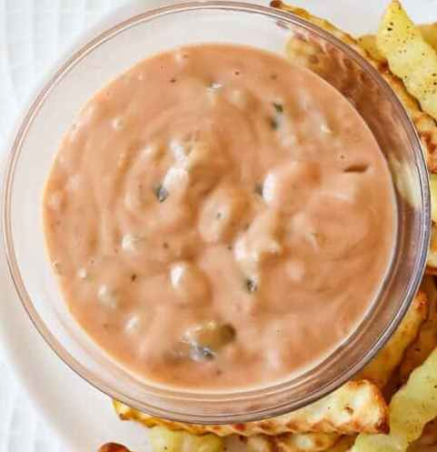

Copycat In-N-Out Special Sauce

Description
This copycat In-N-Out sauce is like a glorified thousand island.
This spread will be in high demand at your house when you make the copycat Flying Dutchman at home.
Ingredients
- 2/3 cup mayonnaise
- 3 tablespoons ketchup
- 2 tablespoons sweet pickle relish
- 1 1/2 teaspoons vinegar
- 1/2 teaspoon white sugar
- 1/4 teaspoon salt
- 1/4 teaspoon ground black pepper (optional)
Steps
- Stir mayonnaise, ketchup, pickle relish, vinegar, sugar, salt,
and pepper together in a small bowl and until well combined.
Serve immediately or refrigerate for up to 2 weeks.
Back to the main page